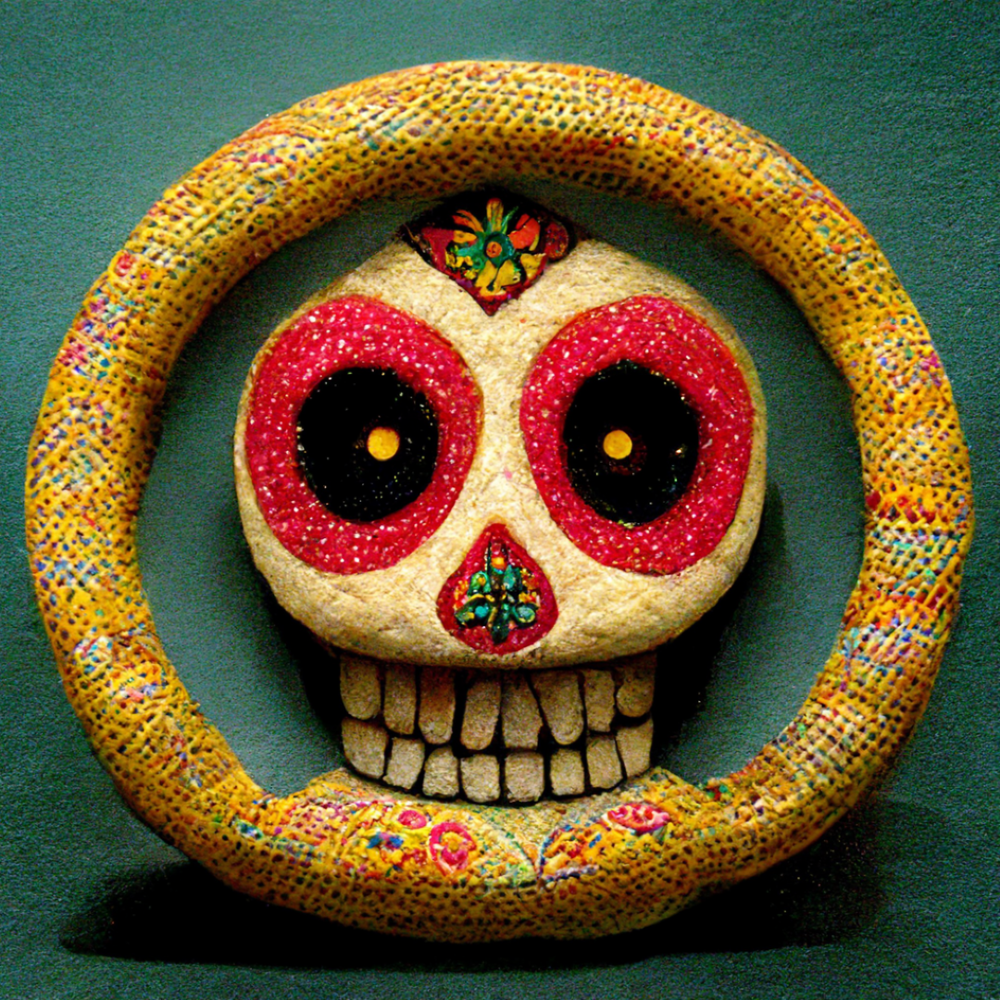

Anger & Vanilla Motivate Parking Attendant's Crimes

 In 1994 or 1995 the patient had become a security guard at the local community college. The job was to monitor the parking habits of 18-22 year olds in a large dirt parking lot. He repeatedly had altercations with students, particularly males. Three days before the incident, the patient argued with a student on the paved street portion of the lot near the back entrance to the school. For causes unknown, the patient was observed yelling at the boy, “there will be nothing left of you but a pile of teeth and broken bones.”
In 1994 or 1995 the patient had become a security guard at the local community college. The job was to monitor the parking habits of 18-22 year olds in a large dirt parking lot. He repeatedly had altercations with students, particularly males. Three days before the incident, the patient argued with a student on the paved street portion of the lot near the back entrance to the school. For causes unknown, the patient was observed yelling at the boy, “there will be nothing left of you but a pile of teeth and broken bones.”
School officials were terrified to go against the patient, many of them were forced to part in an outer parking lot, nearly a mile away from the school. It was rumored that the man was a felon and had lied about his past to get the job. This was before the treatments began, obviously.
He never killed out of hatred – only anger. Vanilla was one of his triggers. If he even got the whiff of vanilla, he would rampage across campus screaming, “Vanilla is not a flavor! It’s the absence of flavor!” A female student wearing a vanilla fragrance, was unfortunate enough to cross paths with him. They found her body torn to pieces and drenched in chocolate syrup in cardboard boxes behind the trailer where they hold the psychology classes.
Fortunately, those days are behind the patient. He is one hundred percent rehabilitated. The completion of his thirty-six hours of aroma therapy qualified him for work-release and we recommend he resume his duties at the college immediately. The incident appears to have been a one time event. The patient has asked that we share the following statement.
“Dear Sirs. Thank you for agreeing to release me on this day. I shall not kill. If they only would have put sprinkles on the vanilla or parked the cars straight, I shall not have killed. The fault of a man is only measured by the shortcomings of those around him. Do not blame the wicked man for the wrongs that he has righted. I hereby do agree to be released from this prison. My body is free to wander the free lands straightening cars and relieving those unworthy of their teeth and bones as needed, but only if they do not smell of vanilla. The vanilla has a right to children. I shall climb the trees of vanilla-roma and bathe in the vanilla beans until I gain the strength to stomp them from existence. In summary, upon my release, I hereby do promise to kill no person, except the enemies of my captors, unless circumstances shall cause my captors to delay my release. In case which my captors shall be forcibly retired from their positions for the crime of double crossment . Peppermint is the top flavor. Viva la aroma! “
Related posts

The Monkey's Lesson: A Fable on the Dangers of Cell Phone Addiction
Once upon a time, in a small forest, there lived a group of animals. These animals were very curious and…

The Dangers of Eye Contact with the Soulless
They say the eyes are the windows to the soul. But what if the eyes you are looking into have…


Scientists Discover Chocolate and Vanilla are the Only Two Flavors
Children have known for decades that there is something special about the chocolate / vanilla combination. Ever increasing consumption of…